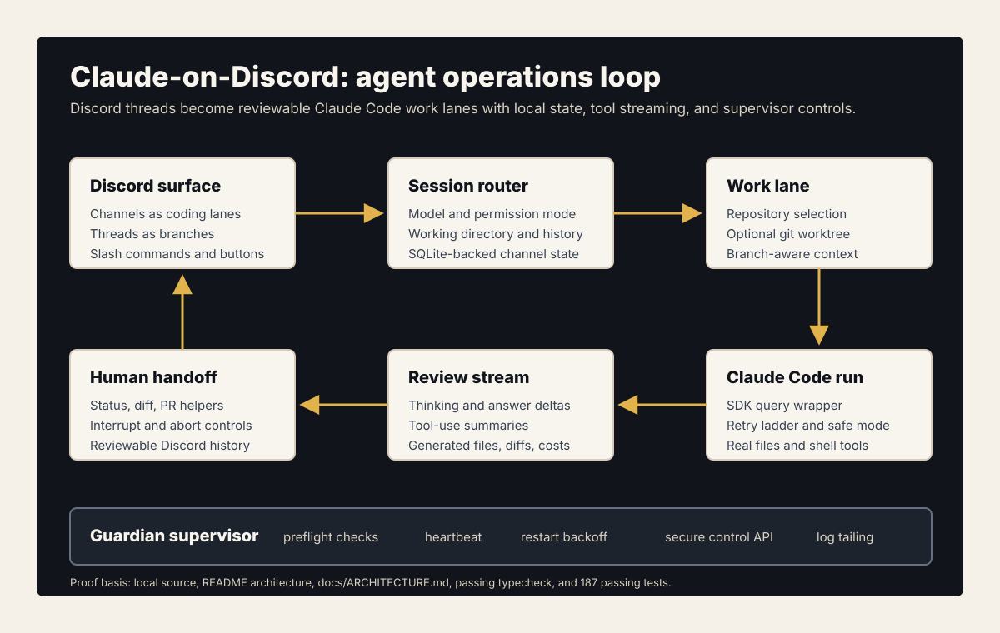
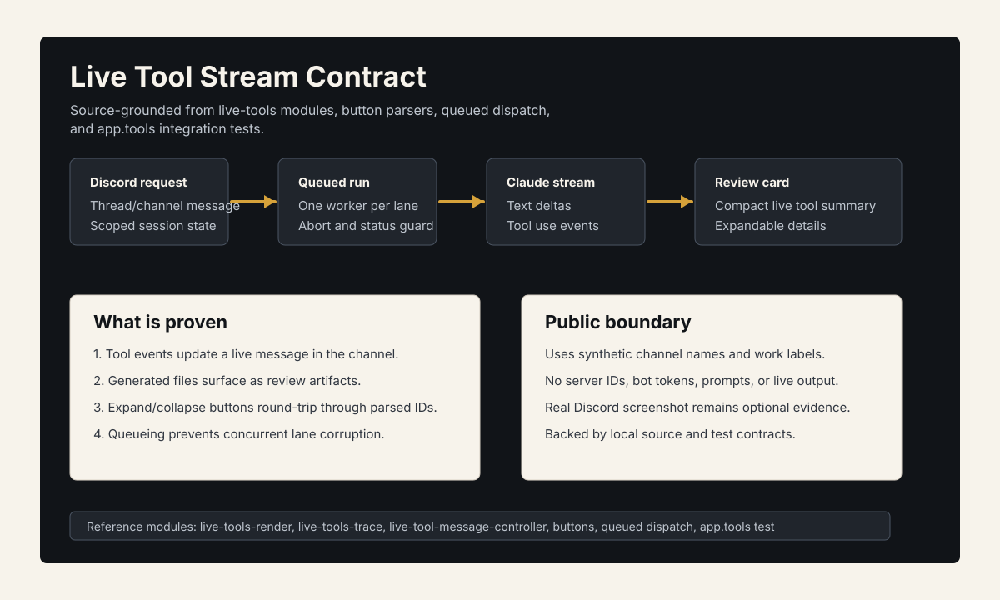

Problem
Coding agents are powerful but awkward when their work is hidden in a local terminal. A team needs clear lanes, visible tool events, branch/worktree separation, and a way to request work from the same collaboration surface where decisions happen.
What I Built
Claude-on-Discord turns Discord into an agent operations layer. Threads become scoped work sessions, commands start or continue Claude Code runs, tool events stream back to the channel, and repository work is organized around branches and worktrees.



System Architecture
Technical Decisions
- Use Discord threads as durable, human-readable session containers.
- Keep agent execution tied to explicit repository and worktree state.
- Surface progress and tool events instead of treating the agent as a black box.
- Preserve a path from request to implementation to review instead of stopping at chat.
What This Proves
This is practical agentic tooling: not a demo chatbot, but infrastructure for delegating real coding tasks, managing concurrent work, and keeping a human reviewer in the loop.